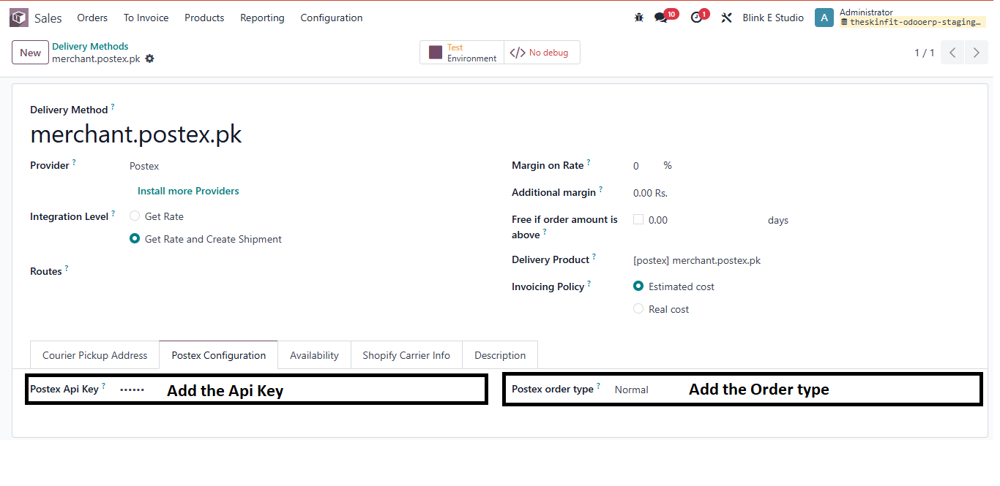
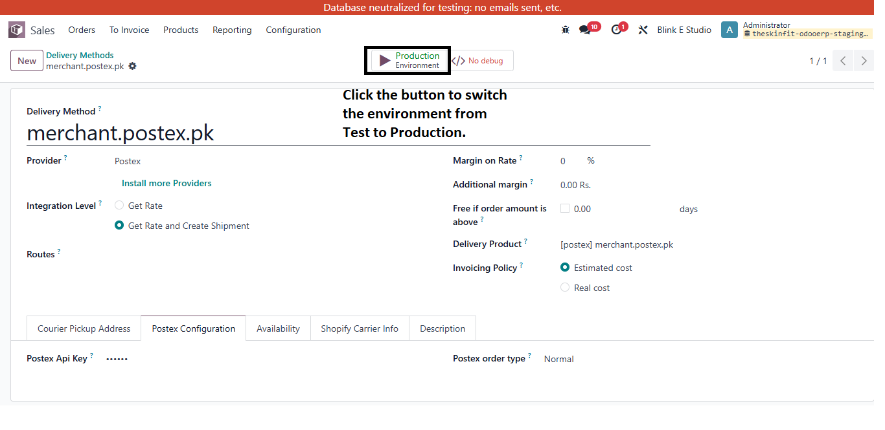
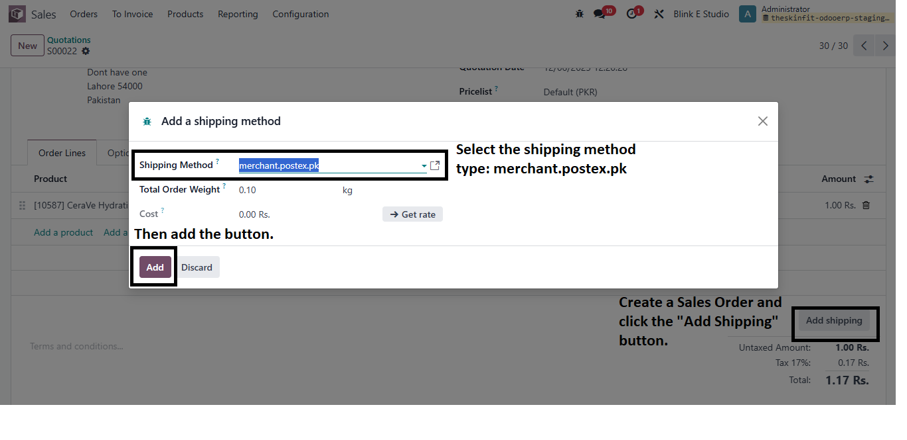
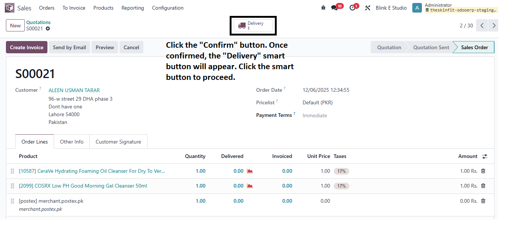
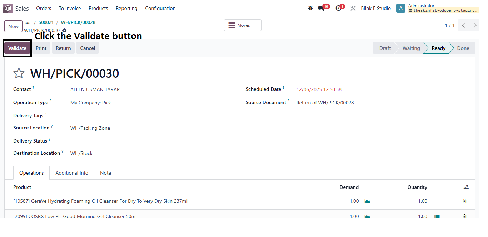
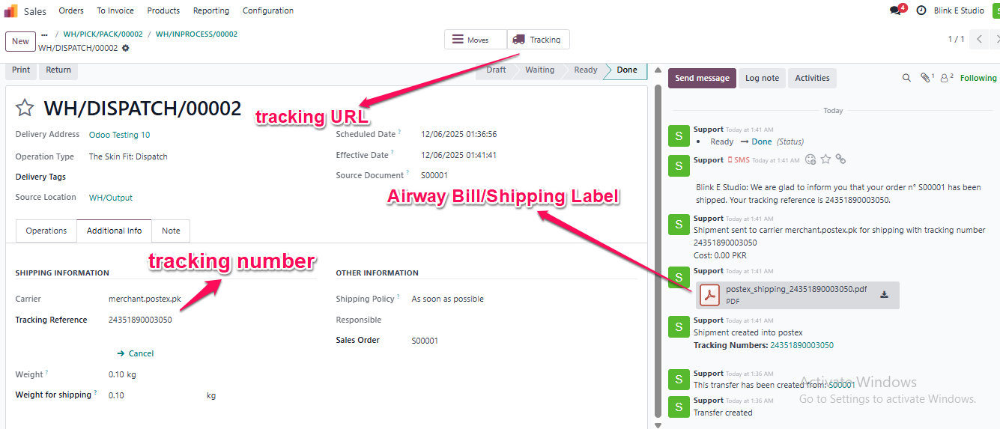
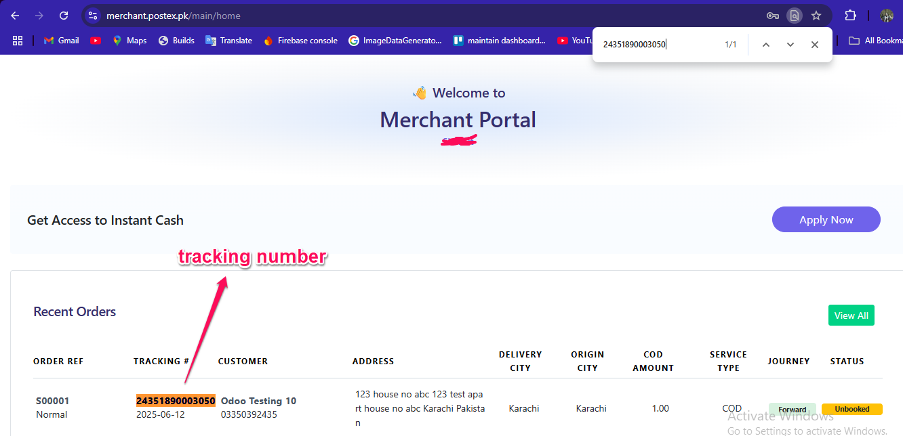
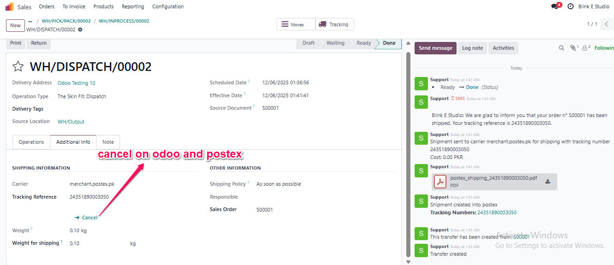
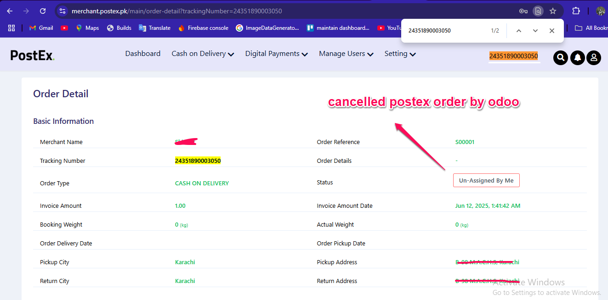
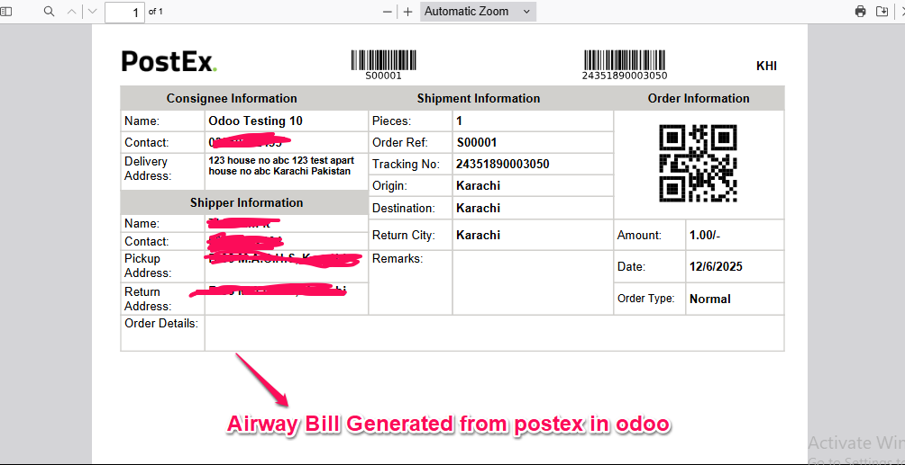

Courier delivery integration involves connecting your business system (like Odoo ERP) with external courier service providers (such as Postex) through APIs. This integration automates the shipping process and enables real-time communication between your system and the courier network.
The Postex integration is designed for streamlined, secure communication with the Postex API. Configuration requires minimal input to authenticate your Odoo instance and define the type of orders to be dispatched via the Postex platform.
Clicking the button activates the live production environment using the configured API key, enabling real-time communication with the Postex platform.
To integrate Postex shipping with a Sales Order, follow these steps: 1. Create a Sales Order by adding customer details and products. 2. Click the "Add Shipping" button to open the shipping options. 3. In the shipping method selection, choose merchant.postex.pk as the shipping service provider. 4. After selecting the method, click the "Add" button to apply the shipping method to the Sales Order.
After creating a Sales Order, click the "Confirm" button to validate the order. Once confirmed, the system will automatically generate a delivery order, and the "Delivery" smart button will appear at the top of the form.
After clicking the "Delivery" button, click the "Validate" button to confirm the delivery. Once Next Transfer, a smart button will appear. Click the smart button to proceed with the next transfer or related operation.
Once the courier delivery integration is successfully validated, the system automatically connects with the courier service provider (e.g., Postex) to generate a shipping request. This process triggers the creation of a shipping label, assigns a tracking number, and prepares the delivery for pickup or dispatch.
When you click the "Tracking" smart button, the system will open the shipment's real-time tracking page provided by the courier service (e.g., Postex). This allows you to monitor the current delivery status, location, and estimated delivery time of the package directly from within Odoo.
If the courier delivery has already been validated and you proceed to cancel it, the system will attempt to notify the courier service (e.g., Postex) through the API to cancel the shipment request. Once cancelled, the tracking number and shipping label associated with the delivery will be invalidated, and the delivery order in Odoo will be reset to a draft or cancelled state.
  